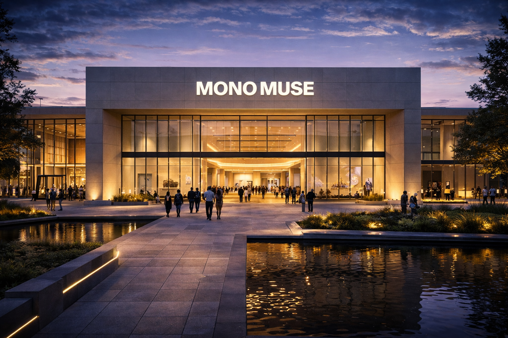

Mission Statement
MonoMuse explores the intersection of art, technology, and imagination. Our mission is to create immersive experiences that spark curiosity, inspire creativity, and challenge the way people see the world. Through interactive exhibitions and experimental media, we celebrate how digital innovation and human expression come together to shape the future of storytelling and culture.
Who We Serve
MonoMuse welcomes artists, students, technologists, and curious minds from around the world. Whether visitors are exploring digital art for the first time or pushing the boundaries of creative technology, the museum provides a space where ideas, innovation, and collaboration thrive. We believe creativity should be accessible to everyone.
Founding Year
MonoMuse was founded in 2016 with the vision of building a museum where art and emerging technology could coexist. From its first exhibition on digital storytelling to its current interactive installations, MonoMuse continues to evolve alongside the creative technologies it showcases.
Milestones
- 2016: MonoMuse opens its doors with its inaugural exhibition exploring digital storytelling and interactive media.
- 2018: Launch of the Interactive Media Lab, giving visitors hands-on opportunities to experiment with creative coding and immersive installations.
- 2021: Introduction of immersive AI-generated art galleries and collaborative artist residencies.
- 2023: Major expansion of the museum space and the start of international artist partnerships and traveling exhibitions.
- 2025: Over 500,000 visitors reached and the debut of the Future Creators program supporting emerging digital artists.